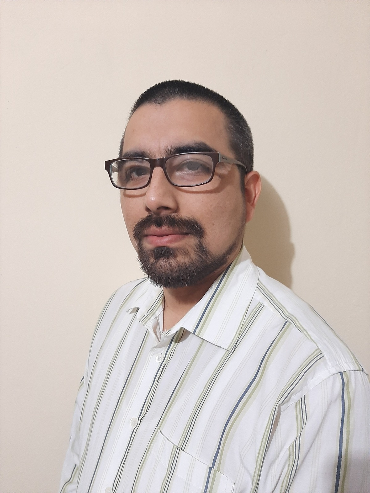
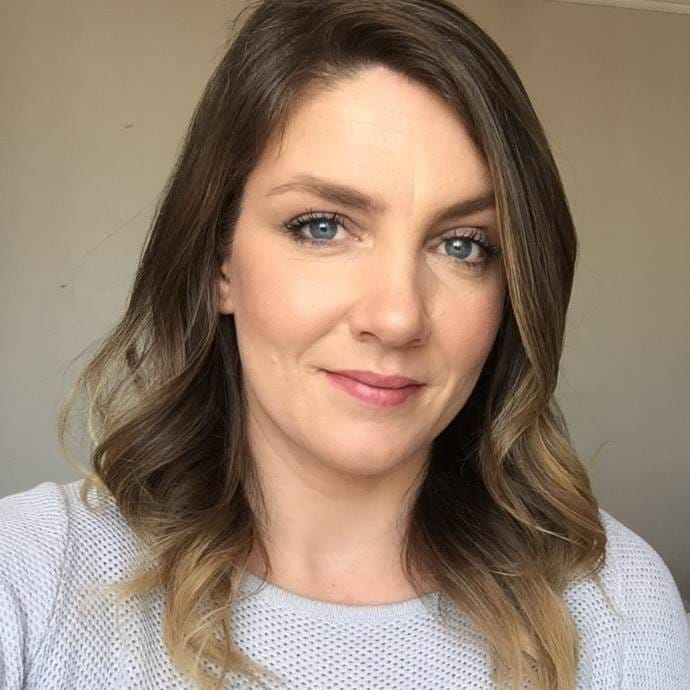
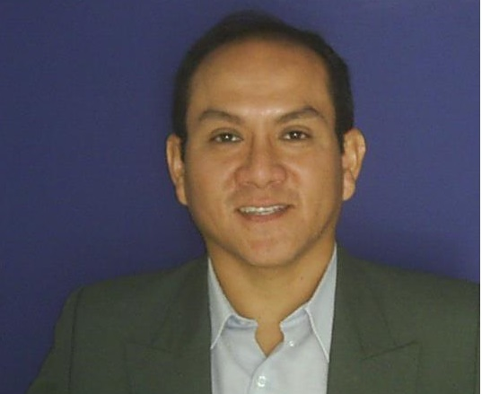
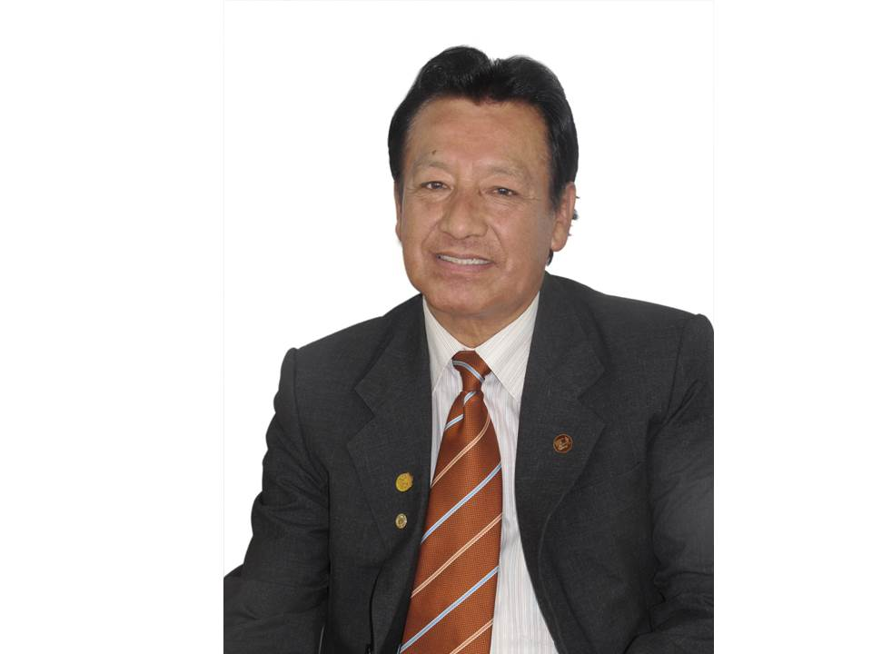

Ponencia: Estudios cuantitativos y cualitativos con poblaciones originarias de Perú. PROCIENCIA-CONCYTEC.

Acerca del Evento
El Vicerrectorado de Investigación por medio de la Dirección de Institutos de Investigación, se complacen en presentar el “I Congreso Internacional de Investigación” en Homenaje al Dr. Julio Mayta Quispe, evento que ayudará a catalizar el avance del conocimiento, fomentar la colaboración, difundir resultados, promover el aprendizaje y generar impacto tanto en la comunidad científica de la Universidad Nacional del Altiplano como en la Sociedad Puneña en general; cabe señalar que, es fundamental para comunicar la importancia y relevancia del evento tanto a los estudiantes como a los docentes.
Este Congreso es un espacio de intercambio sobre las prácticas, metodologías, conocimientos e investigaciones en el ámbito de las diferentes áreas de conocimiento. Surge con el fin de debatir las temáticas más relevantes del área que adquieren principal importancia en la actualidad. El presente congreso será un evento importante en el ámbito académico y científico, donde investigadores y expertos de diferentes países se reúnen para compartir y discutir los avances en sus áreas de estudio o conforme las líneas de investigación de la Universidad Nacional del Altiplano Puno.
Ponentes
Ponencia: Diversidad, efecto ambiental en la variabilidad y mejoramiento genético del maíz peruano.

Ponencia: Evaluación multidimensional del Trabajo Decente en el centro poblado minero La Rinconada, Puno-Perú.

Ponencia: La investigación jurídico interdisciplinaria en contextos de pluralismo jurídico.

Ponencia: Estrategias de mejoramiento genético animal para la producción sustentable.
Ponencia: Nuevas tendencias: Nanotecnología alimentaria y los sistemas de liberación de compuestos bioactivos, aplicando tecnologías eco-amigables de extracción.

Ponencia: La brújula de la curiosidad: Tips para encontrar temas cautivadores en la investigación.

Ponencia: Mejoramiento genético de quinua (Chenopodium Quinoa Willd.) y obtención de nuevas variedades por hibridación de genitores distantes y cercanos para su liberación en Puno, Perú.
Inscripciones


{kind=link}
{kind=link}
{kind=link}
{kind=link}
{kind=link}
{kind=link}
{kind=link}
Cronograma
LUNES
| Horario | Actividad |
|---|---|
| 8:00 - 8:20 | Registro |
| 8:00 - 8:40 | Ceremonia de inauguración y discursos de apertura |
| 9:00 - 9:20 | Ponencia magistral |
| 9:20 - 10:00 | Sesiones paralelas |
| 10:00 - 10:20 | Sesiones paralelas |
| 10:20 - 10:40 | Sesiones paralelas |
| 10:40 - 11:00 | Coffe Break |
| 11:00 - 12:00 | Sesiones paralelas |
| 12:20 - 13:00 | Sesiones paralelas |
| 13:00 - 14:20 | Lunch break |
| 14:20 - 14:40 | Ponencia magistral |
| 15:20 - 16:00 | Sesiones paralelas |
| 16:20 - 17:00 | Sesiones paralelas |
| 17:00 - 18:00 | Mesa de trabajo |
MARTES
| Horario | Actividad |
|---|---|
| 8:00 - 8:20 | Registro |
| 8:20 - 9:00 | Sesiones paralelas |
| 9:20 - 10:00 | Sesiones paralelas |
| 10:00 - 10:20 | Sesiones paralelas |
| 10:20 - 10:40 | Sesiones paralelas |
| 10:40 - 11:00 | Coffe Break |
| 11:00 - 13:00 | Sesiones paralelas |
| 13:00 - 14:20 | Lunch break |
| 14:40 - 15:20 | Sesiones paralelas |
| 15:40 - 17:00 | Sesiones paralelas |
| 17:20 - 18:00 | Mesa de trabajo |
MIÉRCOLES
| Horario | Actividad |
|---|---|
| 8:00 - 8:20 | Registro |
| 8:20 - 9:00 | Sesiones paralelas |
| 9:20 - 10:00 | Sesiones paralelas |
| 10:00 - 10:20 | Sesiones paralelas |
| 10:20 - 10:40 | Sesiones paralelas |
| 10:40 - 11:00 | Coffe Break |
| 11:00 - 13:00 | Sesiones paralelas |
| 13:00 - 14:20 | Lunch break |
| 14:40 - 15:20 | Sesiones plenarias |
| 15:40 - 17:00 | Sesiones plenarias |
| 17:20 - 18:00 | Mesa de trabajo |
JUEVES
| Horario | Actividad |
|---|---|
| 8:00 - 8:20 | Registro |
| 8:20 - 9:00 | Sesiones paralelas |
| 9:20 - 10:00 | Sesiones paralelas |
| 10:00 - 10:20 | Sesiones paralelas |
| 10:20 - 10:40 | Sesiones paralelas |
| 10:40 - 11:00 | Coffe Break |
| 11:00 - 13:00 | Sesiones paralelas |
| 13:00 - 14:20 | Lunch break |
| 15:00 - 15:20 | Clausura |